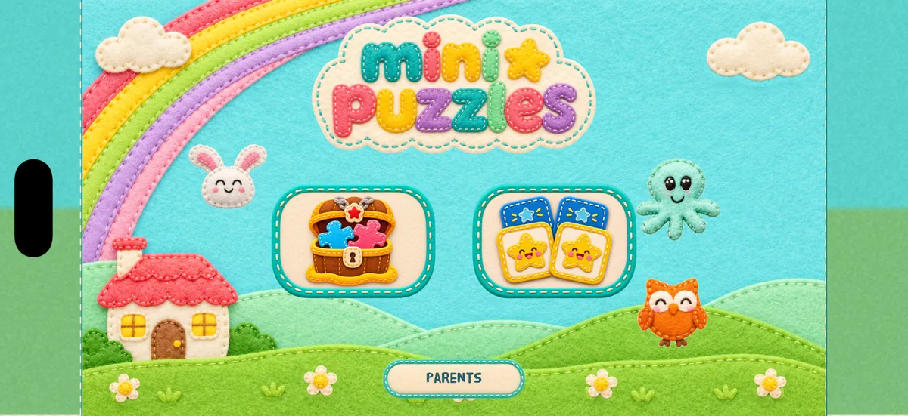
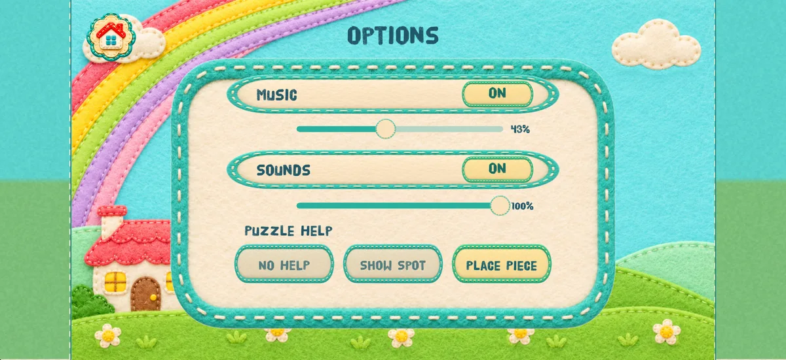

Escenas para encajar formas
Coloca cada personaje de fieltro en su silueta correspondiente y completa la escena paso a paso.
Juego de puzles para niños · iOS
Un suave mundo de fieltro lleno de puzles sencillos para manos pequeñas.
Mini Funny Puzzles es un juego infantil con un alegre nuevo diseño de fieltro. Encaja las formas, arrastra la llave hasta la caja, descubre un pequeño memory y explora escenas simpáticas como Ocean Friends, Little Animals y Fairy Garden.
Nuevo diseño disponible pronto ↓
Descubre Mini Funny Puzzles
La ficha actual de App Store todavía usa el diseño visual anterior. La nueva versión de fieltro que se muestra aquí está en preparación y se publicará en el mismo enlace de App Store.
La nueva dirección artística convierte el juego en una suave caja de juguetes de fieltro llena de colores vivos, caras simpáticas y formas claras. Las interacciones siguen siendo fáciles de entender para los niños y las escenas resultan más divertidas y cuidadas.
Coloca cada personaje de fieltro en su silueta correspondiente y completa la escena paso a paso.
Disfruta de temas divertidos como Ocean Friends, Little Animals, Fairy Garden, Funny Monsters y más.
Da la vuelta a las cartas y encuentra parejas sencillas en una interfaz tranquila pensada para niños pequeños.
Las compras integradas y las acciones externas están dentro de la zona para padres.
Para abrir la zona para padres, hay que mantener pulsado el botón durante unos segundos.




Mini Funny Puzzles está pensado para niños, mientras que la zona para padres separa las acciones relacionadas con la tienda. Allí hay compras integradas opcionales para la versión completa o contenido adicional, y la apertura requiere una breve pulsación prolongada.
Mini Funny Puzzles está disponible actualmente en App Store mediante la ficha existente “Amazing Mini Puzzles Boxes”. El futuro rediseño de fieltro mantendrá el mismo enlace de App Store.